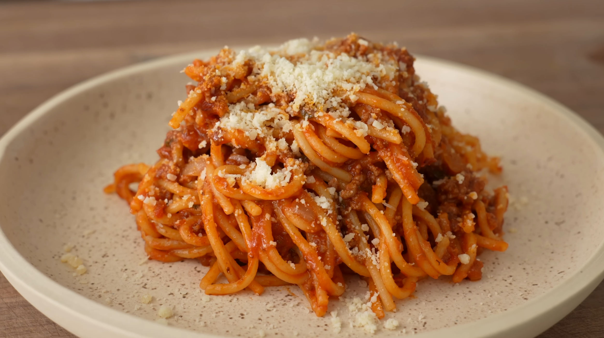

Home
Spaghetti

One Pot Spaghetti Recipe
This spaghetti meat sauce is a one pot recipe that will take about 25-30 minutes and very delicious.
Ingredients
Makes 4 portions
- 1lb/450g 80/20 ground chuck
- 8oz/225g hot italian pork sausage
- 200g or 1 med-lrg onion, medium diced
- 20g or 4 cloves garlic, minced/pressed
- Coarse salt
- 1g or 1/2tsp dried oregano
- 1g or 1/2tsp red chili flake
- 75g or 1/3c tomato paste
- 15g or 1Tbsp beef better than bouillon
- 28oz/800g can crushed tomatoes
- 28oz/800g water (enough water to fill tomato can)
- 7-8g or 2tsp granulated sugar
- 10g or 3Tbsp fresh basil, chopped
- 12oz/340g dried spaghetti (broken in half)
- 50g or 1/2c grated parmesan + extra for garnish
Insturctions
- Heat a dutch oven or large heavy bottomed pot over medium high. Add a bit of oil, the ground beef,
and sausage,
breaking the meat apart into small pieces as it cooks - I use a meat smasher for this.
- When the meat begins to brown and is well broken down, stir in the onion, garlic,
and a pinch of salt, making sure to scrape up any meat fond stuck to the bottom of the pot. Cover and cook for 5 minutes
- Now is a good time to preheat your oven to 425F/220C
- After 5 minutes of cooking, stir in oregano, chile flake, and tomato paste and cook for a minute or so until tomato paste is well incorporated.
- Stir in bouillon and can of crushed tomatoes, water, 6-8g/1.5tsp salt, 7-8g/2tsp sugar and bring to a simmer.
- Stir in basil. Add in spaghetti and gently stir and press down to submerge noodles. Simmer for about 60 seconds.
- Carefully stir noodles again to fully submerge noodles.Transfer the pot to the oven to cook,
uncovered for 16-18 min, gently stirring and submerging at 5 and 10 minutes into cooking.
- Taste for doneness and seasoning and adjust if necessary. Stir in grated parm.
- Garnish with additional parm.